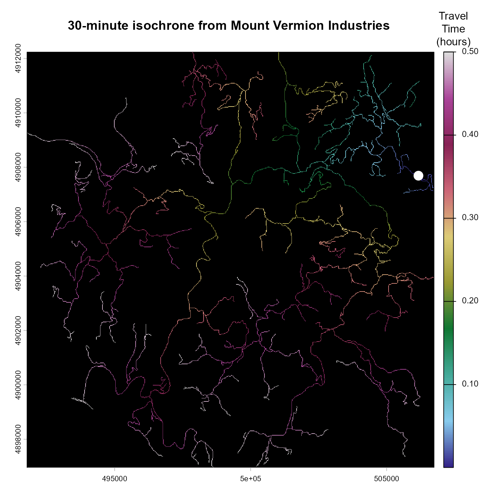
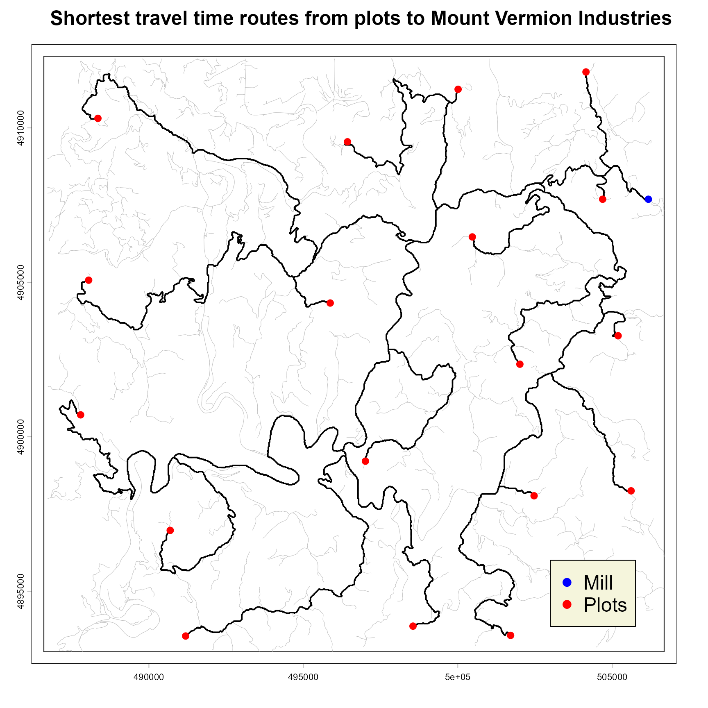

vignettes/tRee2MillCost_vignette.Rmd
tRee2MillCost_vignette.Rmd
library(tRee2MillCost)tRee2MillCost is an R package that
calculates travel cost across a rasterized representation of a road
network between origin (from) and destination (to) locations. The cost
can be calculated as minimal travel time or travel distance. As the name
suggests, the package was originally developed for the BioSum decision support framework to
estimate the cost of transporting woody material from forests to
processing locations such as mills.
Road networks are typically represented as vector line layers obtained from various sources. These layers tend to use different attribute schemas and often lack consistent topology. This is common for forest, rural, and urban road networks alike. The absence of explicit topology, often referred to as a ‘spaghetti’ data model, impedes optimal route calculations. Developing a topologically clean vector network is labor-intensive and often impractical. This package addresses the limitation by converting a composite assembled from multiple vector networks to a raster representation.
Cost estimates based on travel distance require no road attributes, the linear representation suffices. For cost estimates based on travel time all segments in the composite vector network ingested to produce the raster representation must have an attribute representing the modeled travel speed along that segment—for example, the expected speed of log trucks. Legal speed limits are one way to represent travel speed, but rarely included in publicly available vector road layers. Users therefore must estimate travel speeds from auxiliary information, and appropriate values for a given road class may vary geographically. The vector road layer must be attributed with travel speed values before running package functions. Raster cells containing more than one road segment, or part of a segment, inherit the highest travel speed value among them.
The cell values of the raster road layer are then used to determine
travel distance from each road cell to any of its 8 immediate neighbors
that are also members of the road network, analogous to a king’s move in
chess. Unlike the chess rook’s move rule that only considers orthogonal
neighbors, the king’s rule also allows for travel to a diagonal neighbor
at a
cellSize
distance, a setting that yields more realistic road representations and
efficient travel calculations. For cost estimates in travel time
distances are converted to time using the mean travel speed assigned to
each of the two connected cells. Road cells are then represented as
graph nodes, enabling least-travel-distance or least-travel-time route
calculations with the cppRouting package.
Rasters representing road networks are in essence sparse matrices. Route calculations between an origin and a destination require both locations to coincide with road cells. The package workflow examines travel origins and destinations and, when necessary, moves them to the nearest road-network cell in 2-dimensional space; the displacement distance is recorded and, for modeling the cost of moving trees from an origin location to a roadside landing, can serve as a proxy for yarding distance. The minimum travel distance or time is then calculated for every repositioned origin-destination pair. The resulting cost matrix can be used to calculate destination- or origin-level summaries and metrics. The package can also extract optimal (minimum travel distance or time) routes between on-road cells and isochrones, defined as portions of the network reachable from a road cell within a specified travel-distance or travel-time threshold.
Consistent with the GDAL spatial-data model, all rasters created by
the package are saved to the disk. Speed values are converted to 8-bit
(1 byte) integers, with 255 reserved for background (no network) cells.
Speed values are expected to be expressed in miles per hour.
Computationally intensive operations not handled directly by the
cppRouting are implemented in embedded Rcpp.
tRee2MillCost can process road rasters with more than
231 cells and thousands of origin and destination locations.
However, excessively fine resolutions (< 5m) do not improve the
information content of the network representation and may leave numerous
road segments disconnected from the rest of the network, thereby
reintroducing the connectivity problem that rasterization is intended to
alleviate.
Once the raster representation is constructed, it is examined for connectivity. Road cells with no immediate neighbors or groups of cells that are otherwise disconnected from the rest of the network are detected, exported as GeoPackage point layers, and removed from the network. Users can examine the spatial distribution of disconnected segments and, when appropriate, manually edit the vector network to connect them. After any edits, the rasterization and subsequent processing steps must be repeated.
calculateCost : calculate travel cost in time or
distance between origin and destination locationsconnectivity : determine whether points lie on road
network cellscreateGraph : create a routing graph from a
road-network rastermovePt2RdSegment : move origin or destination points to
road network cellsprepareGraph : create a cell-connectivity data frame
from a rasterrasterizeRoads : rasterize a vector line filebackgroundCellValue : set raster background cell values
to NAcellFromGraphNode : get the road-network cell ID
corresponding to a graph nodecheckInputs : validate processing parameters and input
datacostSummary : summarize travel time or distance between
origins and destinationsfromToPaths : delineate routes between sets of origin
and destination locationsgetIsochrone : identify and export the portion of the
road network accessible from a node within a specified travel time or
distance thresholdgraphNodeFromXY : determine the graph node ID
corresponding to a coordinatemaskCells : set selected raster-cell values to NAsetCellValueToInteger : efficiently convert a numeric
raster to integer type
# All spatial data must share the same projected coordinate system with
# linear unit either in meters or feet. Unprojected or geographic
# coordinate systems (longitude/latitude) cannot be used
# Path to the vector layer of the road network
rdPath <- system.file( "extdata", "roads.gpkg", package="tRee2MillCost" )
# Path to the layer containing travel origin ('from') locations / points,
# forest inventory plots in this example
fromPath <- system.file( "extdata", "sample.gpkg", package="tRee2MillCost" )
# Path to the layer containing destination travel ('to') locations / points,
# woody material processing facilities (mills) in this example
toPath <- system.file( "extdata", "mills.gpkg", package="tRee2MillCost" )
# Set the names of fields (attributes) in rdPath, fromPath, and toPath
# layers. All must exist. rdField values should be numeric
rdField <- "MPH"
fromField <- "sampleID"
toField <- "COMPANY_NAME"
# Set the resolution of the road network raster in the linear units of the
# projection used. In this example, a raster resolution of 20 implies meters
# because rdPath, fromPath, and toPath are in UTM zone 10N projection
rasterResolution <- 20
# Specify if travel cost will be calculated in time (costType set to 1) or
# distance (costType set to 2)
costType <- 1 # travel calculations for fastest travel time
# Specify outputs
roadRasterPath <- "road_net.tif"
movedFromPath <- "moved_plots.gpkg"
movedToPath <- "moved_mills.gpkg"
costCSVpath <- "cost_matrix.csv"
# Determine validity of inputs. Evaluate any warnings and decide if you want
# to proceed
checkInputs( rdPath, rdField, toPath, toField, fromPath, fromField,
rasterResolution, roadRasterPath,
movedToPath, movedFromPath,
costType,
costCSVpath )
#> Warning:
#> cost_matrix.csv already exists, likely from a previous run, and will be overwritten
# Convert the vector representation of the road network to raster
# Specify rdField so that future cost computations will be travel time-based
# If rdField is omitted, cost computations will be distance-based
rasterizeRoads( rdPath, rasterResolution, roadRasterPath, rdField )
# Create the graph
# prepareGraph() is called by createGraph() internally, it is not expected to
# be deployed independently
graph <- createGraph( roadRasterPath, costType )
saveRDS( graph, "graph.rds")
# Determine if all plots are on-network locations
connectivity( roadRasterPath, fromPath )
#> Warning in connectivity(roadRasterPath, fromPath):
#> 18 out of 18 element(s) of sample.gpkg are on NA road_net.tif cells
# Determine if all mills are on-network locations
connectivity( roadRasterPath, toPath )
#> Warning in connectivity(roadRasterPath, toPath):
#> 3 out of 3 element(s) of mills.gpkg are on NA road_net.tif cells
# Since they are not, move them to on-network locations
movePt2RdSegment( roadRasterPath, fromPath, movedFromPath )
movePt2RdSegment( roadRasterPath, toPath, movedToPath )
# Confirm that all plots and mills are now on the network
# Note that the point layers are now movedFromPath and movedToPath
connectivity( roadRasterPath, movedFromPath )
# Determine if all mills are on-network locations
connectivity( roadRasterPath, movedToPath )
# Calculate travel cost
cost.df <- calculateCost( graph,
roadRasterPath,
movedFromPath, fromField,
movedToPath, toField )
# Save the cost matrix to the disk
write.csv( cost.df, costCSVpath, row.names=FALSE )
# Summarize travel time for plots that moved from their original location to
# the road network by no more than 500m and then routed on-network to the
# closest mill in no more than 30 minutes (0.5 hours)
cost.list <- costSummary( cost.df, movedFromPath, fromField,
maxMoveDistance=500, travelThreshold=0.5 )
#>
#> 4 'from' locations had move distance greater than 500 m and were excluded
print( cost.list[[1]] )
#> sampleID COMPANY_NAME MINCOST
#> 1 S100786 Mount Vermion Industries 0.338
#> 2 S165231 Mount Vermion Industries 0.485
#> 3 S268975 Pangaion Hills Fibre 0.322
#> 4 S412863 Mt Athos Lumber 0.327
#> 5 S_TEMP Mount Vermion Industries 0.299
#> 6 S613778 Mt Athos Lumber 0.443
#> 7 S713081 Mount Vermion Industries 0.481
#> 8 S_LIDAR Mt Athos Lumber 0.411
#> 9 S883069 Mount Vermion Industries 0.129
#> 10 S906742 Pangaion Hills Fibre 0.268
#> 11 S906987 Pangaion Hills Fibre 0.224
#> 12 S978531 Mount Vermion Industries 0.078
print( cost.list[[2]] )
#> COMPANY_NAME FROMCOUNT COSTMEAN COSTMEDIAN COSTSD
#> 1 Mount Vermion Industries 6 0.302 0.318 0.171
#> 2 Mt Athos Lumber 3 0.394 0.411 0.060
#> 3 Pangaion Hills Fibre 3 0.271 0.268 0.049
# Create and plot a 30-minute isochrone raster for one of the mills
millName <- "Mount Vermion Industries"
sel <- data.frame( vect( movedToPath ) )[, toField] == millName
mill <- vect( movedToPath )[sel]
millCellID <- cellFromXY( rast( "road_net.tif" ), crds( mill ) )
getIsochrone( graph, millCellID, 0.5, millName )
iso.r <- rast( "isochrone_0.5h_Mount Vermion Industries.tif" )
pal <- colorRampPalette( c("#332288", "#88CCEE", "#44AA99", "#117733",
"#999933", "#DDCC77", "#CC6677", "#882255",
"#AA4499", "#DDDDDD") )
par( mar=c( 1.5, 1, 4, 3 ) )
plot( iso.r,
maxcell=1E12, background="black", mar=NA,
smooth=FALSE, col=pal( 256 ),
plg=list( title="Travel\nTime\n(hours)" ),
main=paste("30-minute isochrone from", millName, "\n") )
points( mill, pch=16, cex=2, col="white" )
# Determine and plot the routes for all plots to a mill
plots <- vect( movedFromPath )
plotIDs <- data.frame( plots[, fromField] )[,1]
millID <- as.character( data.frame( mill[, toField] ) )
paths <- fromToPaths( graph, "road_net.tif",
"moved_plots.gpkg", fromField, plotIDs,
"moved_mills.gpkg", toField, millID )
par( mar=c( 1, 1, 0.1, 0.1 ) )
terra::plot( vect( ext(paths) + 500 ) )
terra::lines( crop( vect(rdPath), vect(ext(paths) + 500) ),
lwd=0.5, col="gray")
terra::lines( paths )
legend( x = 503000, y=4896000,
legend=c("Mill", "Plots") ,col=c("blue", "red"),
cex=1.5, pch=16, bg="beige" )
# 'travel time' in title(), as costType is set to 1
title( paste( "Shortest travel time routes from plots to", millID ),
line=-1.5, cex.main=1.5 )
terra::points( plots, pch=16, col="red", cex=1.25 )
terra::points( mill, pch=16, col="blue", cex=1.25 )